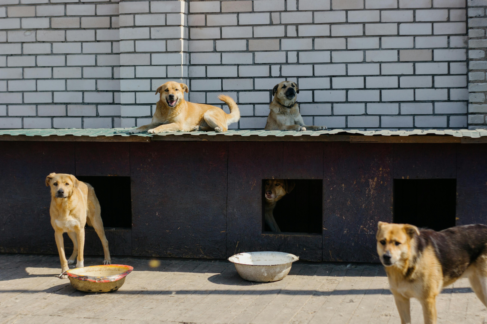
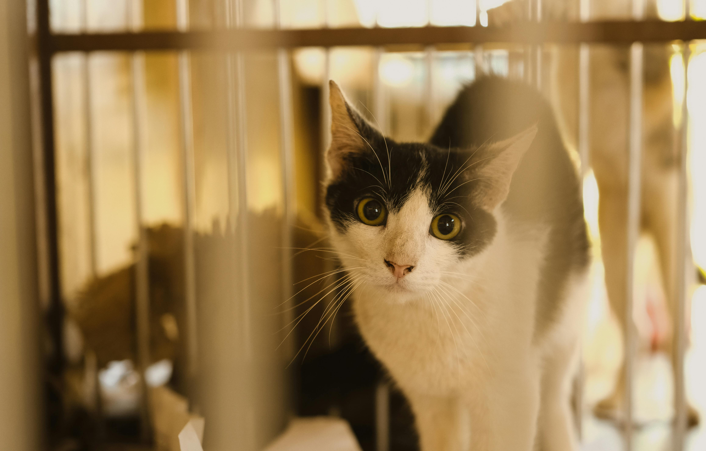
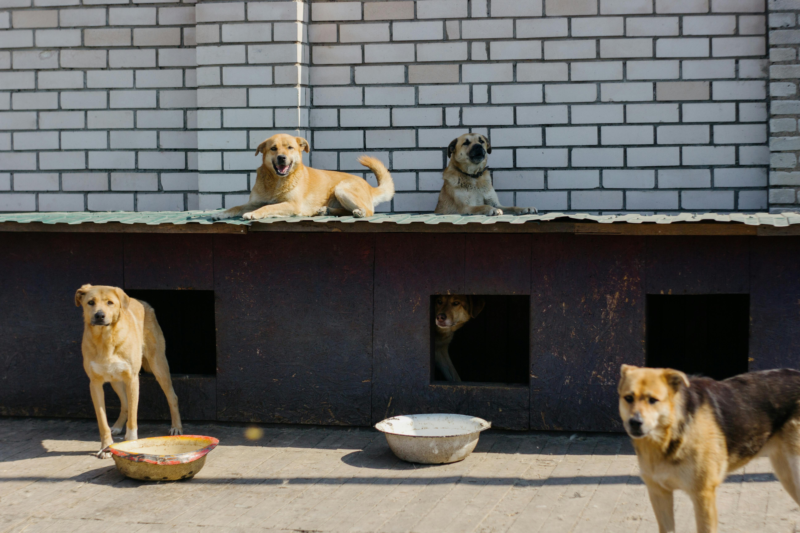
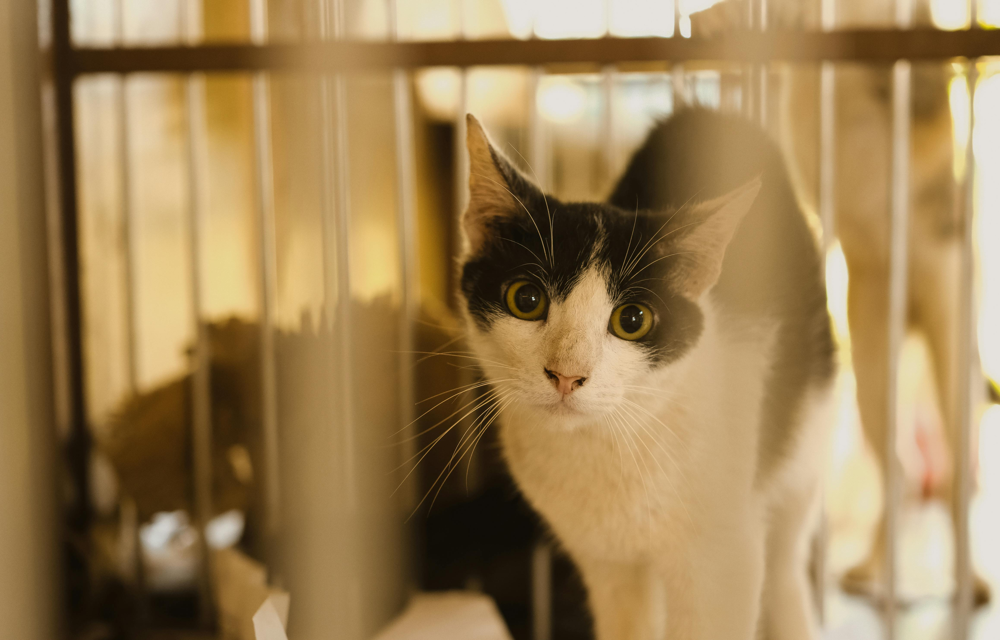

CUCCIOLI ALLEGRI

 



CHI SIAMO?
Siamo un gruppo di persone con una grande passione: gli animali. Il nostro canile nasce dal desiderio di offrire una seconda possibilità a cani e gattini che, per diversi motivi, hanno perso la loro casa.
Ogni giorno ci prendiamo cura di loro con amore, pazienza e rispetto, perché per noi non sono solo ospiti... sono parte della nostra famiglia. Accogliamo, curiamo, coccoliamo e, soprattutto, cerchiamo per ognuno di loro una nuova casa dove poter ricominciare.
Crediamo che ogni cane meriti una vita piena di affetto e dignità, e facciamo del nostro meglio per regalargliela.
Se anche tu ami gli animali come noi, vieni a conoscerci: potresti trovare un nuovo amico che ti sta già aspettando con la coda che scodinzola!
LA NOSTRA STORIA
Tutto È cominciato con un piccolo sogno e un grande amore per gli animali.
Anni fa, in un angolo tranquillo della nostra città, alcune persone con il cuore grande hanno deciso di unire le forze per creare un rifugio sicuro per cani e gatti in difficoltà.così è nato Cuccioli Allegri.
Inizialmente avevamo solo qualche cuccia, una staccionata e tanta buona volontà. Col tempo, grazie al sostegno di volontari, donatori e famiglia adottive, il nostro rifugio è cresciuto, diventando una vera casa centinaia di animali.
Ogni cucciolo che accogliamo a una storia diversa: c'è chi è stato abbandonato, chi è nato per strada, che ha conosciuto la paura e la solitudine. Ma qui da noi trovano calore, cura e la possibilità di una nuova nuova vita.
Il nostro impegno non si limita all'accoglienza: promuoviamo l'adozione responsabile, organizziamo eventi sul territorio e collaboriamo con scuole associazioni per diffondere il rispetto e l'amore verso gli animali.
Cuccioli Allegri è più di un canile/gattile. È una famiglia allargata catalizzante, code scodinzolanti e cuori generosi. E siamo felici di condividerla con tutti voi.
EVENTI E NOVITÁ
Cuccioli Allegri non è solo un rifugio: è una comunità viva, fatta di persone che amano gli animali e vogliono fare la differenza. Organizziamo regolarmente eventi aperti al pubblico come giornate di adozione, passeggiate con i cani, visite guidate al rifugio, raccolte di cibo e materiali utili, laboratori educativi per bambini e tanto altro!
Partecipare ai nostri eventi è un’occasione per conoscere i nostri ospiti pelosi, passare del tempo in compagnia, fare qualcosa di buono e, chissà... magari innamorarsi di un nuovo amico a quattro zampe.
Seguici sui nostri social o controlla spesso questa sezione per non perderti le prossime iniziative: ogni evento è un passo in più verso una vita migliore per i nostri cuccioli.
SEGUICI SUI SOCIAL
I social sono il nostro modo preferito per restare in contatto con te e con tutti gli amici degli animali! Su Instagram e Facebook condividiamo ogni giorno foto dei nostri cuccioli, storie di adozione, aggiornamenti sugli eventi, richieste urgenti di aiuto, e momenti teneri e divertenti dal rifugio.
Seguendo Cuccioli Allegri sui social potrai:
- Conoscere i nuovi arrivati al canile/gattile
- Scoprire chi ha trovato casa grazie a voi
- Partecipare virtualmente alla vita quotidiana del rifugio
- Aiutarci a diffondere le storie degli animali in cerca di famiglia
Ogni like, commento o condivisione fa la differenza: insieme possiamo dare più visibilità ai nostri cuccioli e aumentare le possibilità che vengano adottati!
📸 Instagram: @cuccioliallegri 👍 Facebook: Cuccioli Allegri - Canile e Gattile